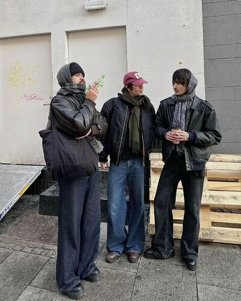
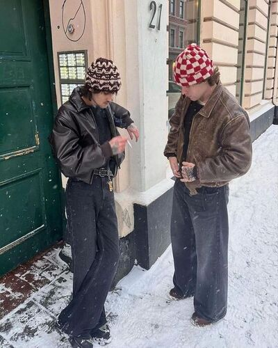
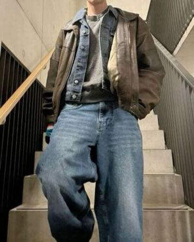

Настало время спланировать свой гардероб
Подберем основные верхние вещи:
Летняя одежда:
Бомберы. Спортивные куртки, застёгивающиеся на молнию, внизу и на манжетах обязательно присутствуют резинки.
Куртки. Могут быть из кожи, джинсы или лёгких тканей. Часто украшены металлическими кнопками, цепями или стразами.
Ветровки. Отличаются кроем воротников или рукавов. Шьют из плащевой ткани.
Осенняя одежда:



Дафлкот: Однобортное пальто с капюшоном, прямого силуэта длиной три четверти.
Пуховик: Легкий и теплый, пуховик идеально подходит для холодных осенних дней.
Джинсовая куртка: Идеальный вариант для межсезонья.
Кожаная куртка: Этот универсальный элемент гардероба добавляет образу дерзости и стиля.
Наиболее популярные сайты для покупки одежды оригинальных брендов:
lamoda - На площадке представлены более 5000 брендов,
количество покупателей — 13 млн человек, а в день заходят более 2 млн посетителей.
wildberries - самый популярный маркетплейс в России,
на котором находится огромное количество товаров по ценам ниже рынка.
ozon - так же популярный маркетплейс в России,
который предоставляет доступ заказа покупок из-за рубежа.
Ниже представлен пример идеального образа на начало осени
Список вещей в представленной образе: